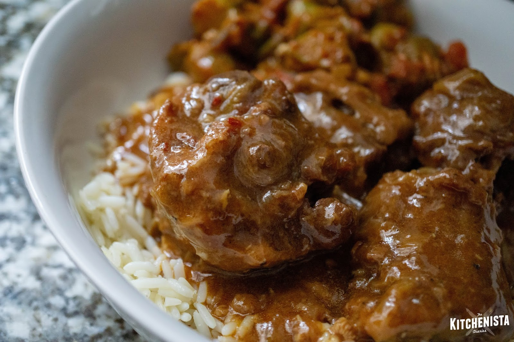

Southern Smothered Oxtails

Authentic Taste of the South
There’s something about southern oxtails and gravy that just comforts my soul. No seriously! If I’m not feeling well, or If I had a bad day just the simple thought of oxtails and rice makes me feel better. My mom used to make oxtails all the time. Especially for Sunday’s supper. She’d serve the oxtails with her infamous southern style potato salad, mixed greens, and corn muffins. We’d tear up dinner like there was no tomorrow! The only thing that would be left on our plate would be the bones, and not string of meat! It was the best! It was, and still is one of my soul food dishes.
Ingredients
- Beef oxtails
- All pourpose flour
- Worcestershire sauce
- Kosher salt
- Ground black pepper
- Vegetable oil
- Beef Broth
- Yellow onion
- Minced garlic
Directions
- Season the oxtailswith 2 tsp kosher salt, and 1 tsp black pepper.Drizzle the worcestershire sauce all over the oxtails, then toss the oxtails to make sure that they are coated.
- Next, sprinkle 1/4 cup of flour all over the oxtails, and make sure that the oxtails are coated with the flour. Then pour the vegetable oil into a large pan, and place the pan over medium heat.
- Once the oil is nice and hot add the oxtails in, and brown them.Once the oxtails are nice and brown remove them from the pan, and put them in the slow cooker.
- If they are burnt pieces in the pan, pour out the oil, strain, clean the pan, then pour the strained oil back into the pan.Start adding the remaining flour into the pan, but only a little bit at a time. Whisk continuously.
- Once the flour is brown, and resembles " chunky peanut butter", slowly pour in the beef broth or water.Whisk while you pour!Make sure everything is lump free, then turn the heat from medium to high.
- Once the gravy reaches a full boil, reduce the heat to medium, and add in the sliced onions, and garlic.Stir the gravy, and do a taste test.Add as much salt & pepper that you think you may need.
- Turn the heat off, and pour the gravy into the slow cooker covering the oxtails.Make sure that the oxtails are nicely covered with gravy, then set the slow cooker on high.Let cook for 8 hours.Once done serve with mashed potatoes, rice, or whatever you'd like.